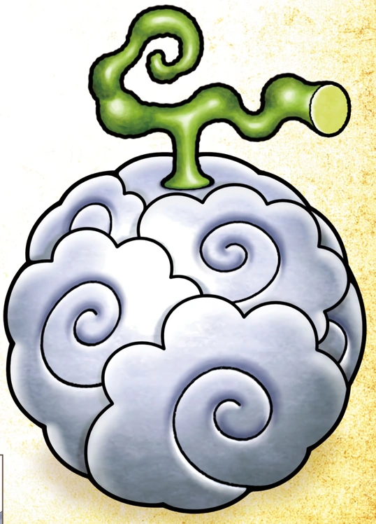
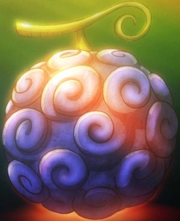
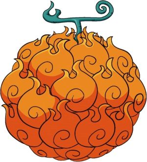

What Are Devil Fruits?
Devil Fruits are special fruits in One Piece that give people powerful abilities. However, the person who eats one loses the ability to swim. For more info Click here

Paramecia
Paramecia fruits give unusual abilities that affect the body, objects, or the environment. for more info on Paramecia Click Here

Zoan
Zoan fruits allow the user to transform into an animal or an animal-human form. For more info on Zoan Fruits Click Here

Logia
Logia fruits give control over natural elements such as fire, smoke, lightning, or light. For More Info On Logia Fruits Click Here
Examples
Luffy's fruit gives him stretching abilities, smoker's fruit gives him smoke forms, and some characters can control powerful natural elements.